Project Projection — Interactive Projection Installation
A large-scale interactive projection installation built for the Jarvis Challenge, turning student artwork into a participant-driven experience. A projected tabletop served as the making surface; a responsive front-wall projection mirrored every action back as a real-time 3D world — built end to end in TouchDesigner, from input and lighting to the final reveal.
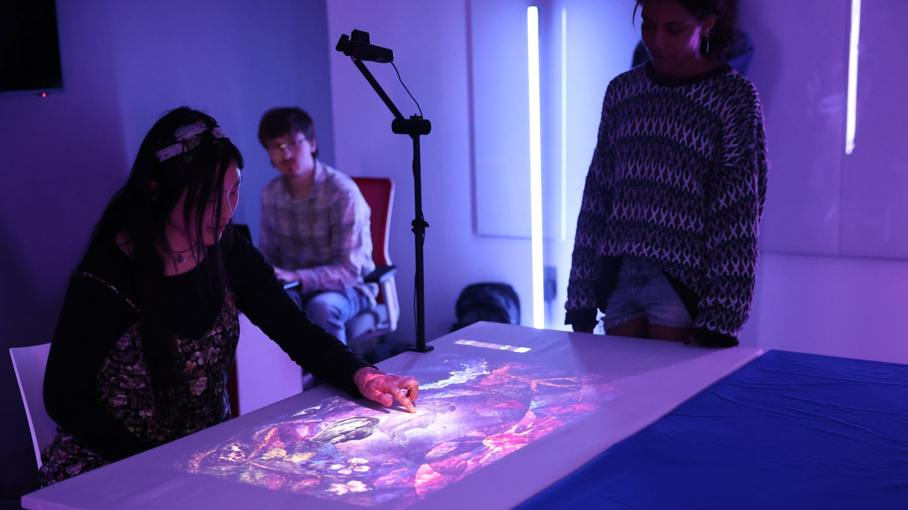
Role / Contribution
I designed and built the real-time 3D wall world — the particle systems, the state-driven camera with parallax, and the closing wave-meter finale — along with refined interaction logic for the installation's main experience. I built the input-routing system and tested multiple tracking approaches (MediaPipe, Leap Motion, and an Orbbec depth camera) for bringing gesture and hand tracking into TouchDesigner, then integrated the team's interaction modules into one unified build. I also developed a scripted workflow for making structured, version-controlled changes across the installation's ~2,000-operator TouchDesigner network, and supported documentation, projection setup, and live operation during the public showcase.
Showcase Day
Project Projection went live for the public Jarvis Challenge showcase on May 29, 2026 — the projected table, the responsive wall, and visitors moving through the full experience in the room. Click any photo to view it larger.
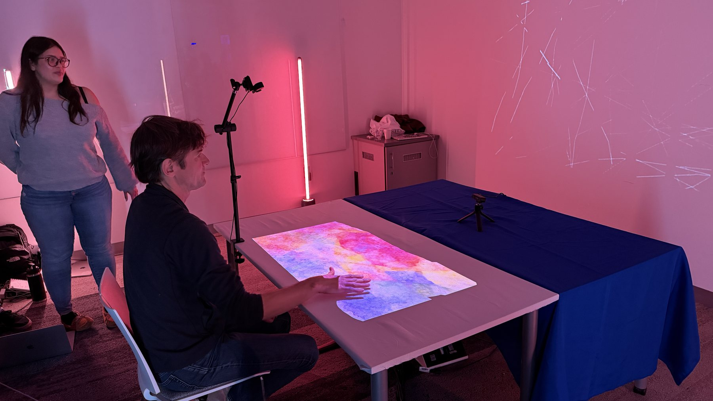
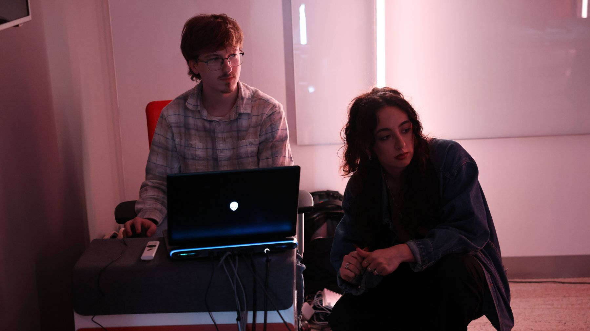
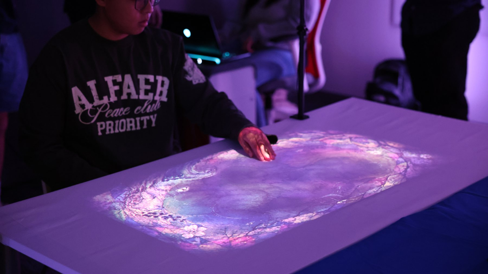
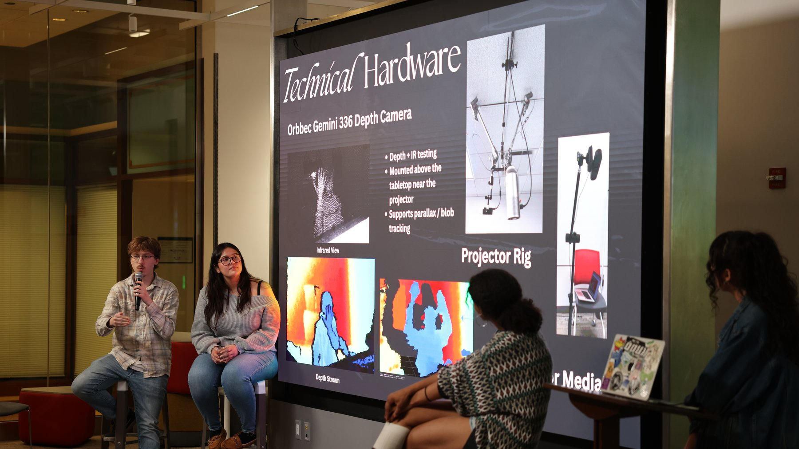
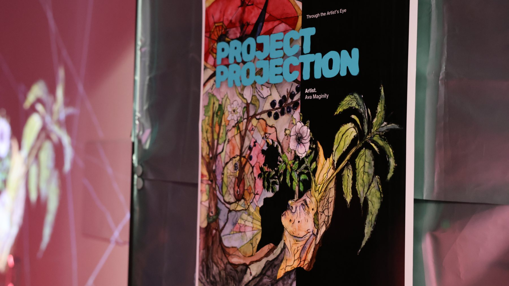
Project Context
Developed with Paige Desimone, Frida Frausto, and Jailyn Turner for the 2026 Jarvis Challenge, Project Projection turns student artwork into a participant-driven experience. Visitors worked at a projected tabletop — the making surface — while a front-wall projection responded as the artwork's inner world. Gestures and materials placed on the table drove the experience forward: revealing a hidden form, collecting and assembling its pieces, and finally uncovering a completed work of student art, with the wall mirroring every step in real time. Two interactive paths ran on the same table-and-wall system, and most visitors tried both.
System / Process
TouchDesigner ran the entire installation — two projectors (an XGIMI MoGo 4 Laser for the table, an ultra-short-throw projector for the wall), real-time visuals, lighting, and audio — across one structured network with separate systems for input, state, each interaction, the wall world, and final output. That separation meant individual pieces could be revised without breaking the rest, and it's what made a same-day input swap possible on showcase day. The wall world itself is a real-time 3D scene: instanced pencil strokes, particle fields, GLSL shader effects, and a state-driven camera with parallax, all tied directly to actions happening on the table. Four networked Govee floor lights matched the room's color to what was happening on the table, so the feedback extended past the two screens into the room itself.
Tracking + Input Tests
Hand interaction was prototyped with MediaPipe camera tracking, a Leap Motion controller, and an Orbbec depth camera, each tested as a way to bring physical gestures into the TouchDesigner build. Those tests shaped the final input-routing architecture, which kept sensing, state, and visuals fully decoupled — a decision that mattered on showcase day. Head-tracked parallax on the wall, driven by front-facing MediaPipe face tracking, worked throughout the showcase. Hand tracking didn't: the brighter showcase lighting interfered with camera-based hand tracking, so the public showcase ran on an operator-assisted input fallback instead — every visual, state, and wall response stayed exactly as designed, with an operator translating each visitor's hand position into the system. That swap was possible without touching anything downstream, specifically because of how the input system was architected.
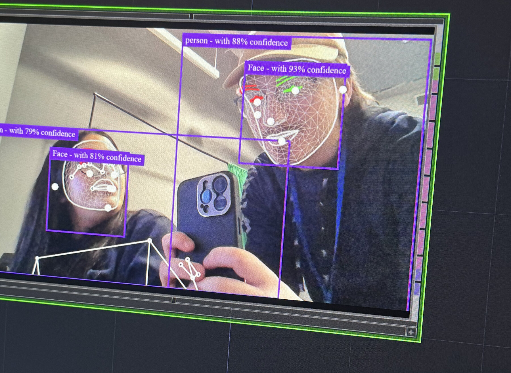
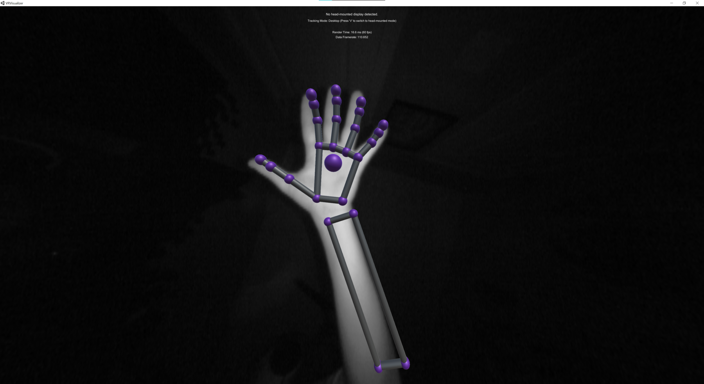
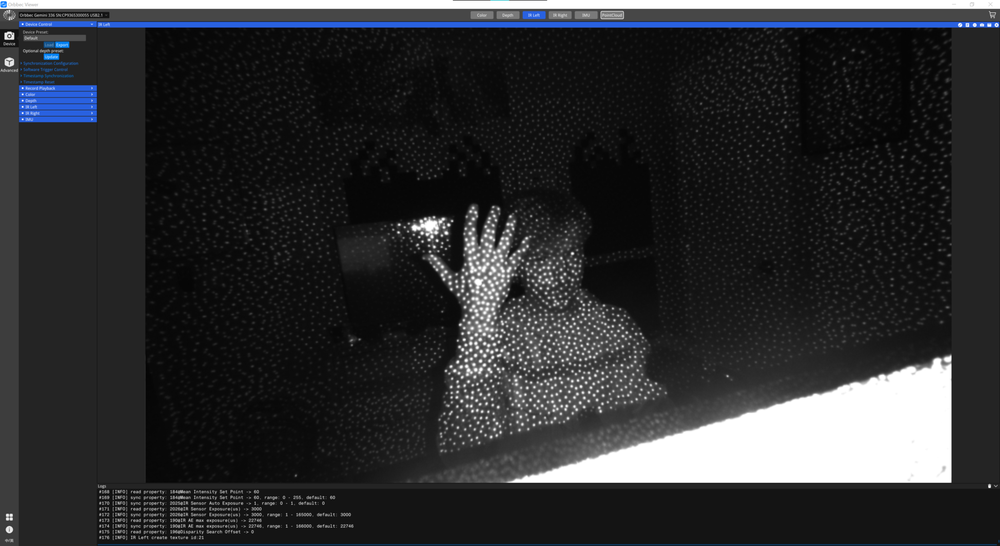
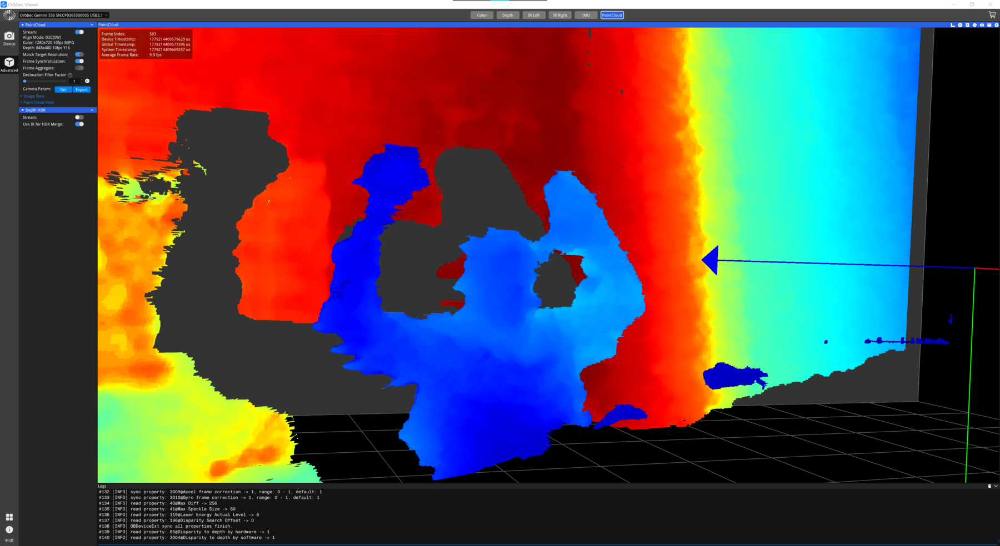
Tools / Technical Workflow
- TouchDesigner and Python for interaction state, input routing, and system integration
- GLSL effects, feedback-based reveal mechanics, and real-time particle systems
- Dual-projector table and wall mapping with a responsive 3D wall scene
- MediaPipe, Leap Motion, and Orbbec Gemini 336 tracking prototypes
- Networked Govee lighting linked to the projected color system
What We Learned
- Feedback needs to read at room scale — the experience landed when a table action visibly changed the whole room, not just the spot under a visitor's hand.
- A sensing setup that works in a dim room can break under a bright projector. Bench tests aren't a substitute for testing under real showcase conditions.
- A demo proves the concept. What an audience responds to is the experience itself — the reveal, the payoff, the room reacting — not which sensor happened to be driving it.
Marketing Visuals
Atmospheric photos shot separately to develop the project's visual identity — distinct from the Showcase Day documentation above.
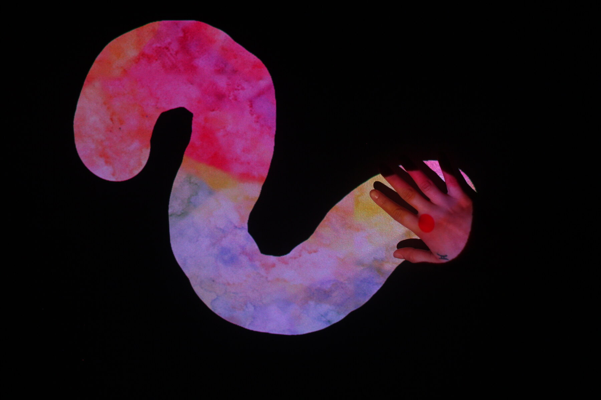
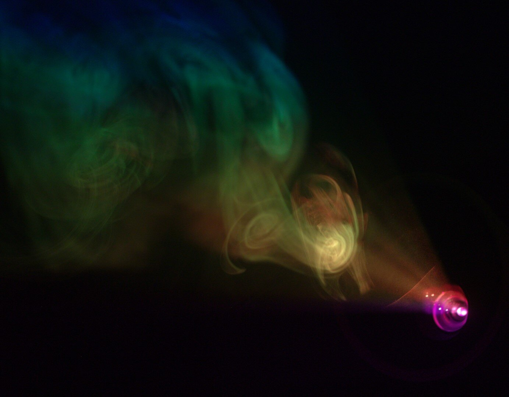
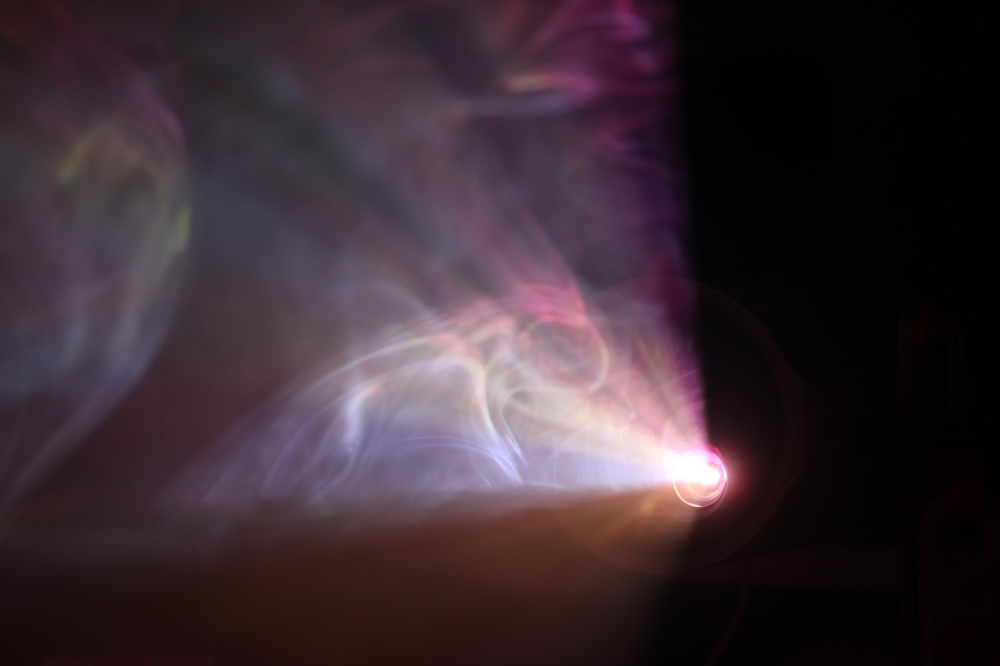
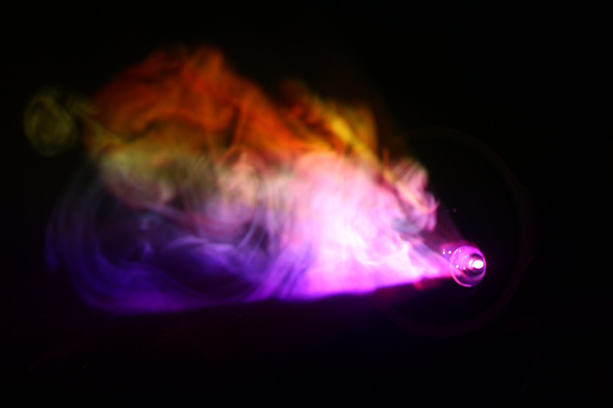
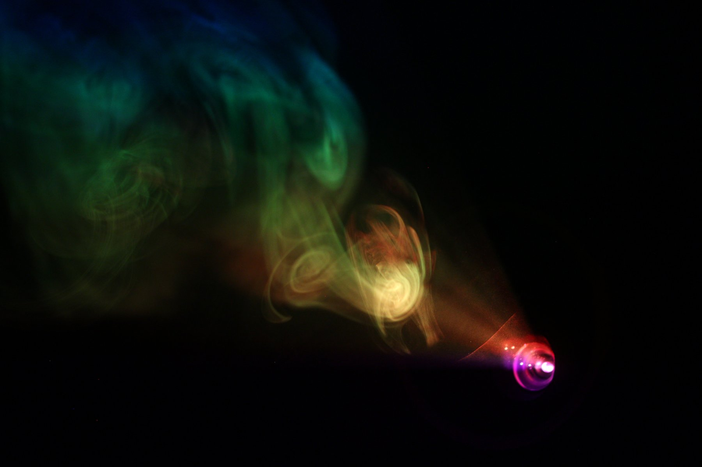
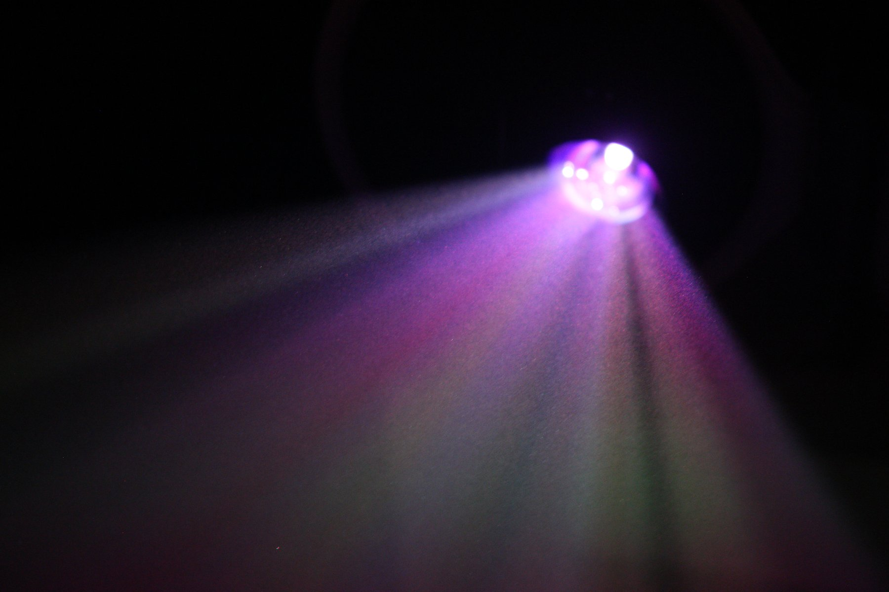
Status
The final TouchDesigner build and written documentation are archived. Showcase video may be added here if it becomes available.